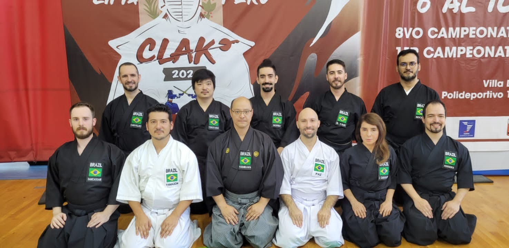

-
Primeiro brasileiro a alcançar o 7º Dan em Iaido
.jpg)
02/03/2025
No dia 02 de março de 2025, em Quioto, o Sensei Alexandre Pereira, Muso Jikiden Eishin Ryu, é o brasileiro com a maior graduação (Renshi 7º Dan) pela Federação Japonesa de Kendo (Zen Nihon Kendo Renmei - ZNKR). Um marco significativo para as artes marciais e o Iaido no Brasil. A conquista, que exige anos de dedicação, habilidade e conhecimento profundo, consolida a posição do Sensei Alexandre como um respeitado expoente da modalidade, sendo o primeiro brasileiro a alcançar esse patamar. O feito foi celebrado por seus alunos e colegas.
-
Kyoto Taikai 2025
02/05/2025
Neste fim de semana está ocorrendo o 121º Enbu Taikai (Encontro de Demonstração) da Zen Nihon Kendo. Acesse nos links abaixo os Enbu de Iaido do Kyoto Taikai de 2025:
Kyoto Taikai 2025 - Canal 1
Kyoto Taikai 2025 - Canal 2
-
2º Campeonato Latinoamericano de Iaido 17/10/2025 a 19/10/2025 - Santiago, Chile
01/05/2025
Entre os dias 17 e 19 de outubro de 2025, a capital chilena, Santiago, será palco do 2º Campeonato Latinoamericano de Iaido . O evento reunirá Kenshi e Sensei diversos países do continente americano. O campeonato busca fortalecer os laços entre os países da região e promover o intercâmbio técnico e cultural entre os praticantes de Iaido. Aguardem mais informações!